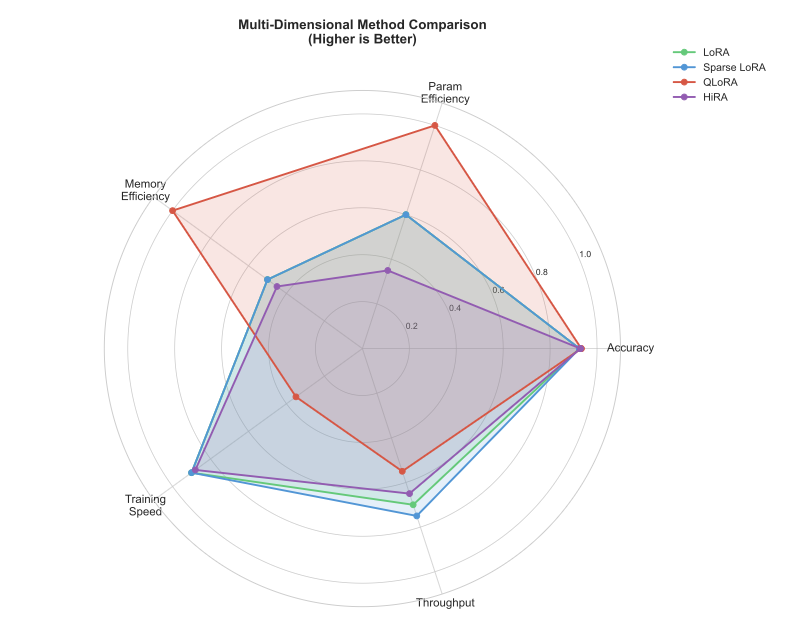
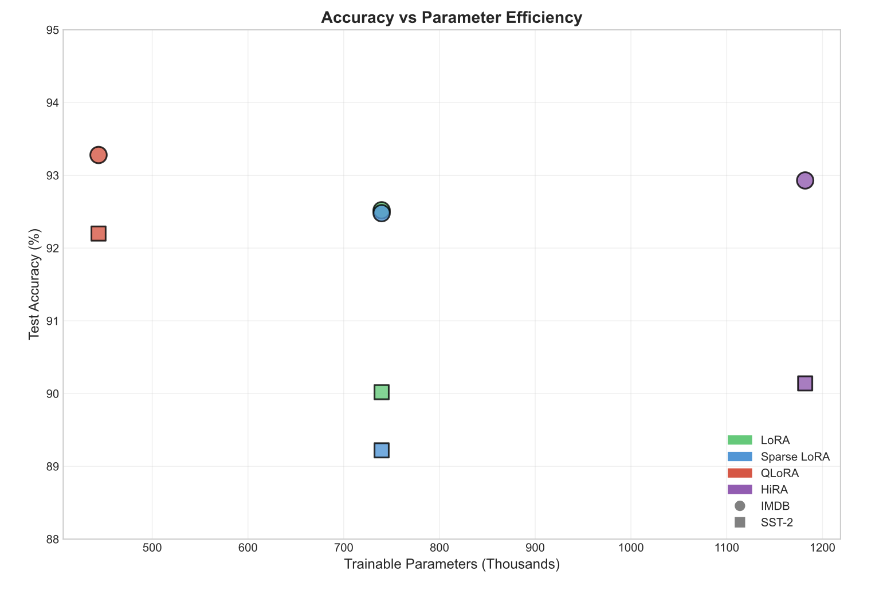
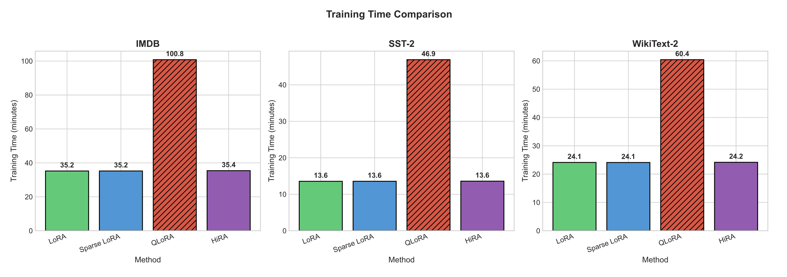

Benchmarking Parameter-Efficient Fine-Tuning of LLMs



→ scroll to see more →
Overview
Fine-tuning large language models is computationally expensive. This paper benchmarks four parameter-efficient fine-tuning (PEFT) methods — LoRA, Sparse LoRA, QLoRA, and High-Rank LoRA — evaluating their trade-offs across accuracy, memory footprint, training time, inference throughput, and trainable parameter count.
Technical Details
- Evaluated on three benchmark datasets: IMDB (binary sentiment), SST-2 (short-text sentiment), and WikiText-2 (language modeling)
- Backbone models: DistilBERT (66M parameters) and BERT-base (110M parameters)
- Implemented and ran all experiments using PyTorch and Hugging Face's PEFT library on the Duke Compute Cluster
- Sparse LoRA variant used a cubic sparsity schedule with magnitude pruning and L1 regularization to reach 50% sparsity
- High-Rank LoRA (r=32) used as a proxy for HiRA to test the effect of increased adapter capacity on generative tasks
- Produced comprehensive analysis with radar charts, parameter efficiency comparisons, and deployment recommendations
Key Findings
- QLoRA achieved the highest classification accuracy (93.28% on IMDB) with 50% memory reduction, but at a 2.5–3.5× training time penalty
- High-Rank LoRA achieved the best language modeling perplexity (2.62 on WikiText-2), suggesting higher adapter rank benefits generative tasks
- Sparse LoRA reached 50% sparsity with less than 0.8 percentage point accuracy loss — suggesting significant redundancy in low-rank adapters
- Standard LoRA provides the most balanced trade-off across all metrics and remains the safest default choice